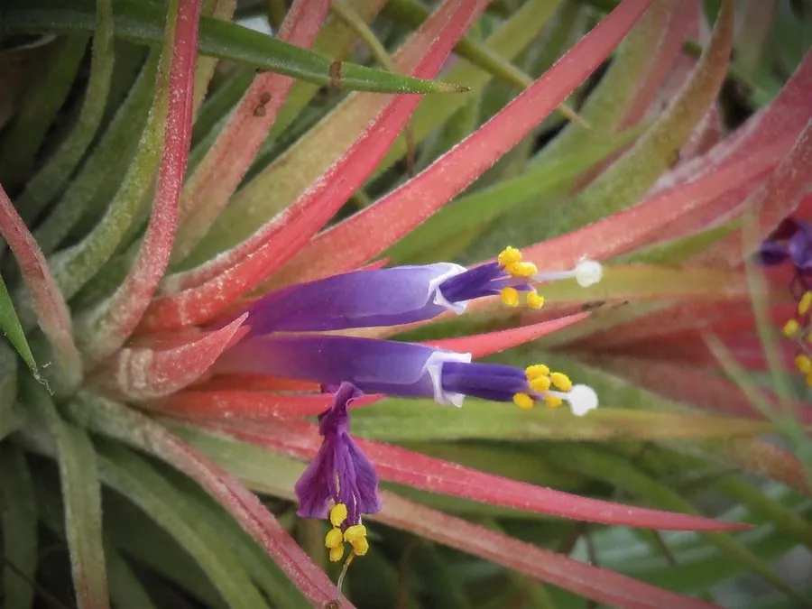

花卉与草本 · 植物界
空气凤梨 Tillandsia ionantha

凤梨科多年生附生草本，无需土壤、靠叶面吸收水分，可直接悬挂或摆放，是奇特的“空气植物”，原产中南美。
- 分类
- 门被子植物门纲木兰纲目禾本目科凤梨科属铁兰属
- 栖息环境
- 中南美洲的树干、岩石上，喜温暖、通风、散射光
- 地理分布
- 原产中南美洲，现世界各地盆栽，中国各地花市常见
- 保护级别
- 暂无评估
物种志
空气凤梨为凤梨科铁兰属多年生附生草本，株高 5–15 厘米，叶片细长、肉质，表面密布银白色鳞片，植株呈莲座状或丛生。花小，管状，紫色或白色，花期不定，多在春夏；苞片在花期变红，十分醒目；果实为蒴果。
空气凤梨原产中南美洲的热带和亚热带地区，附生于树干、岩石甚至电线上，靠叶片表面的银白色鳞片吸收空气中的水分和养分，因此不需要土壤。它形态奇特、管理简单，可直接悬挂、粘贴或摆放在支架上，是近年流行的“空气植物”；养护时需定期喷雾或浸泡补水，并保持良好通风和明亮散射光。
形态与习性
- 株高5–15 厘米，莲座状或丛生
- 花期多在春夏，苞片变红
- 果期花后结蒴果
- 光照喜明亮散射光
- 水分靠叶面鳞片吸水，需定期喷雾
- 土壤不需要土壤，可悬挂栽培
- 繁殖侧芽分株
- 主要用途悬挂装饰、桌面盆栽
趣味知识
- 空气凤梨不需要土壤，靠叶片表面的鳞片吸收空气中的水分和养分。
- 它可直接悬挂、粘贴或摆放在支架上，是奇特的“空气植物”。
- 养护时需定期喷雾或浸泡补水，并保持良好通风。
- 花期苞片变红，小花管状，紫色或白色。